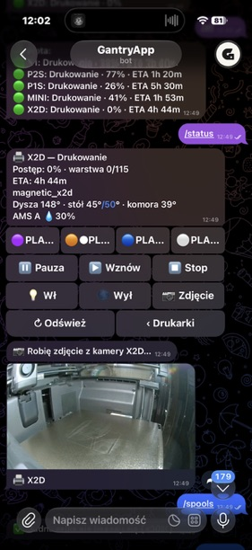
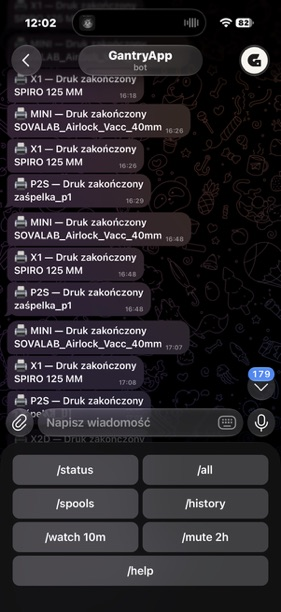
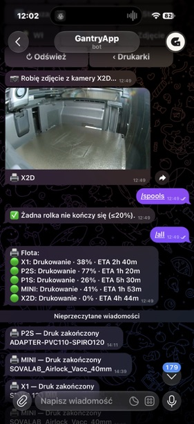

GantryAppbot · now
✓ P2S — Druk zakończony
zero clearance dewalt 7492
Czas druku 2 h 14 min
16:28 · delivered





Every screen below comes from the real GantryApp Telegram bot — with the same messages and controls used today.